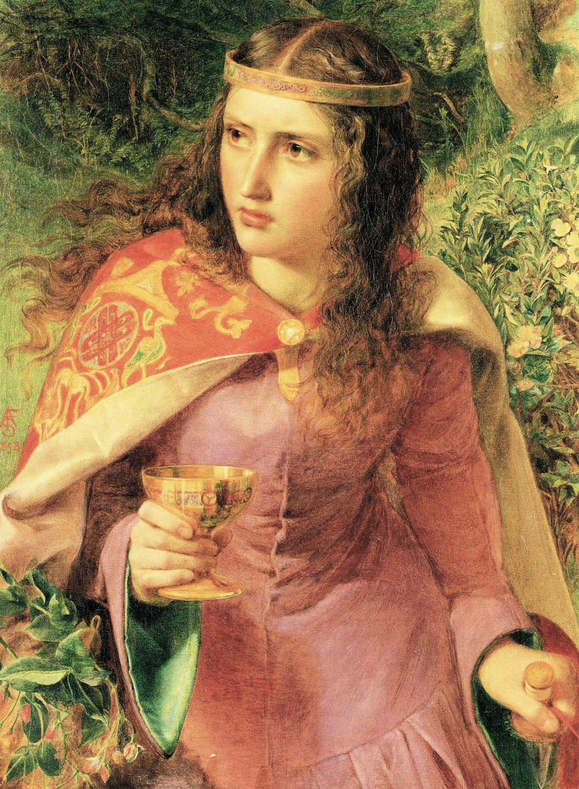

<head>
<meta charset="UTF-8" />
<meta name="keywords" content="drawing, painting" />
<meta name="description" content="drawings by Sunjy" />
<title>Sunjy</title>
<link rel="shortcut icon" type="image/x-icon" href="../../mImages/mCommon/favicon.ico" media="screen" />
<link rel="stylesheet" type="text/css" href="../../mCsses/mCommon/mCssA.css" />
<link rel="stylesheet" type="text/css" href="../../mCsses/mCommon/mCssB.css" />
<link rel="stylesheet" type="text/css" href="../../mCsses/mCommon/mCssC.css" />
<link rel="stylesheet" type="text/css" href="../../mCsses/mCommon/mCssD.css" />
<link rel="stylesheet" type="text/css" href="../../mCsses/mContent/mCssA.css" />
<link rel="stylesheet" type="text/css" href="../../mCsses/mContent/mCssB.css" />
<link rel="stylesheet" type="text/css" href="../../mCsses/mContent/mCssC.css" />
<link rel="stylesheet" type="text/css" href="../../mCsses/mContent/mCssD.css" />
</head>
<script type="text/javascript" src="../../mScripts/mContent/mContentAA.js" /></script>
<script type="text/javascript" src="../../mScripts/mContent/mContentAB.js" /></script>
<script type="text/javascript" src="../../mScripts/mContent/mContentAC.js" /></script>
<script type="text/javascript" src="../../mScripts/mContent/mContentAD.js" /></script>
<script type="text/javascript"></script> 
<script type="text/javascript">
document.write('<div class="mImgAbsolute"></div>');
/*
document.write('<p class="mFontSizeBColor" />From a white paper...</p>');
document.write('<table class="center"><tr><td>');
document.write('');
document.write('</td></tr></table>');
*/
</script>


<script type="text/javascript">
document.write('<p class="mFontSizeBColor" />Queen Eleanor on her way to poison her husband’s mistress</p>');
document.write('<p class="mFontSizeSColor" />“Queen Eleanor” by Frederick Sandys depicts Queen Eleanor of Aquitaine, the wife of King Henry II of England, on her way to poison her husband’s mistress, Rosamund Clifford. <br><br>The traditional story recounts that King Henry concealed his affair from Queen Eleanor by conducting it within the innermost recesses of a complicated maze.<br><br>Queen Eleanor penetrated the labyrinth to Rosamund’s bower while trailing a red cord. The red thread is shown in her left hand.<br><br>The Queen then and forced her rival to choose between a dagger and a bowl of poison. Fair Rosamund chose the poison and died.<br><br>Queen Eleanor of Aquitaine <br><br>Eleanor of Aquitaine (1122 – 1204) was queen consort of France and England and Duchess of Aquitaine in her own right.<br><br>As a member of the House of Poitiers, which ruled in southwestern France, she was one of the wealthiest and most powerful women in western Europe during the High Middle Ages.<br><br>She was a patron of literary figures, and she also led armies several times in her life and was a leader of the Second Crusade.<br><br>As the duchess of Aquitaine, Eleanor was the most eligible bride in Europe. She married King Louis VII of France, and as the queen of France, she participated in the unsuccessful Second Crusade.<br><br>Soon afterward, Eleanor sought an annulment of her marriage. The King eventually agreed to an annulment, as the 15 years of marriage had not produced a son. Their daughters were declared legitimate, and their custody was awarded to Louis, but Eleanor’s lands were restored to her.<br><br>As soon as the annulment was granted, Eleanor became engaged to the Duke of Normandy, who became King Henry II of England in 1154.<br><br>Henry was 11 years younger, and over the next 13 years, she bore eight children: five sons, three of whom became kings, and three daughters.<br><br>However, Henry II and Eleanor eventually became estranged. By late 1166, Henry’s affair with Rosamund Clifford had become known. <br><br>It was at this time that the poisoning of the King’s mistress occurred, and Eleanor’s marriage to Henry appears to have become terminally strained.<br><br>Henry imprisoned Eleanor in 1173 for supporting their son Henry’s revolt against him. She was not released until 16 years later after Henry died, and her son, Richard the Lionheart, ascended the throne.<br><br>As queen dowager, Eleanor acted as regent while Richard went on the Third Crusade. Eleanor also lived well into the reign of Richard’s heir and her youngest son, John.<br><br>Rosamund Clifford<br><br>Rosamund Clifford (1150 – 1176), often called “The Fair Rosamund,” was famed for her beauty and was a mistress of King Henry II of England. She was reputed to be Henry’s greatest love.<br><br>Henry had met her in 1166 and had begun their liaison in 1173. The king had many mistresses, but although he treated earlier liaisons discreetly, he flaunted Rosamund. He may have done so to provoke Eleanor into seeking an annulment.<br><br>The traditional story recounts that to conceal his illicit affair from Eleanor; he conducted them within the innermost recesses of a complicated maze, which he caused to be made in his park at Woodstock, Oxfordshire.<br><br>Queen Eleanor heard rumors, and she contrived to penetrate the labyrinth, confronted her rival.<br><br>Upon Rosamund’s death, rumors soon spread, perhaps assisted by Henry’s camp, that Eleanor had poisoned Rosamund.<br><br>Henry loved Rosamund and donated substantial money to the Godstow Nunnery, where Rosamund was buried.<br><br>The story Rosamund Clifford’s death was handed down for generations and gradually embroidered with various additional details, more or less scandalous.<br><br>Rosamund Clifford was reputedly one of the great beauties of the 12th century and inspired ballads, poems, stories, and paintings.<br><br>Frederick Sandys<br><br>Frederick Sandys was an English painter and illustrator associated with the Pre-Raphaelites and with the Norwich School of painters.<br><br>“Queen Eleanor” is an 1858 oil painting by the Pre-Raphaelite artist Frederick Sandys, who was a disciple of Rossetti, one of the founders of the Pre-Raphaelite.<br><br>Sandys specialized in half-length figures of beautiful but often destructive women. Sandys’s meticulous attention to detail is typical of the Pre-Raphaelite school.<br><br>By the early 1860s, he began to exhibit the paintings which set his reputation. The dominant influences on his art were conceptions of tragic power.<br><br>The somber intensity and stern beauty in his art meant that it was not always popular. <br></p>');
document.write('<table class="center" /><tr><td>');
document.write('<br>The traditional story recounts that King Henry concealed his affair from Queen Eleanor by conducting it within the innermost recesses of a complicated maze.<br><br>Queen Eleanor penetrated the labyrinth to Rosamund’s bower while trailing a red cord. The red thread is shown in her left hand.<br><br>The Queen then and forced her rival to choose between a dagger and a bowl of poison. Fair Rosamund chose the poison and died.<br><br>Queen Eleanor of Aquitaine <br><br>Eleanor of Aquitaine (1122 – 1204) was queen consort of France and England and Duchess of Aquitaine in her own right.<br><br>As a member of the House of Poitiers, which ruled in southwestern France, she was one of the wealthiest and most powerful women in western Europe during the High Middle Ages.<br><br>She was a patron of literary figures, and she also led armies several times in her life and was a leader of the Second Crusade.<br><br>As the duchess of Aquitaine, Eleanor was the most eligible bride in Europe. She married King Louis VII of France, and as the queen of France, she participated in the unsuccessful Second Crusade.<br><br>Soon afterward, Eleanor sought an annulment of her marriage. The King eventually agreed to an annulment, as the 15 years of marriage had not produced a son. Their daughters were declared legitimate, and their custody was awarded to Louis, but Eleanor’s lands were restored to her.<br><br>As soon as the annulment was granted, Eleanor became engaged to the Duke of Normandy, who became King Henry II of England in 1154.<br><br>Henry was 11 years younger, and over the next 13 years, she bore eight children: five sons, three of whom became kings, and three daughters.<br><br>However, Henry II and Eleanor eventually became estranged. By late 1166, Henry’s affair with Rosamund Clifford had become known. <br><br>It was at this time that the poisoning of the King’s mistress occurred, and Eleanor’s marriage to Henry appears to have become terminally strained.<br><br>Henry imprisoned Eleanor in 1173 for supporting their son Henry’s revolt against him. She was not released until 16 years later after Henry died, and her son, Richard the Lionheart, ascended the throne.<br><br>As queen dowager, Eleanor acted as regent while Richard went on the Third Crusade. Eleanor also lived well into the reign of Richard’s heir and her youngest son, John.<br><br>Rosamund Clifford<br><br>Rosamund Clifford (1150 – 1176), often called “The Fair Rosamund,” was famed for her beauty and was a mistress of King Henry II of England. She was reputed to be Henry’s greatest love.<br><br>Henry had met her in 1166 and had begun their liaison in 1173. The king had many mistresses, but although he treated earlier liaisons discreetly, he flaunted Rosamund. He may have done so to provoke Eleanor into seeking an annulment.<br><br>The traditional story recounts that to conceal his illicit affair from Eleanor; he conducted them within the innermost recesses of a complicated maze, which he caused to be made in his park at Woodstock, Oxfordshire.<br><br>Queen Eleanor heard rumors, and she contrived to penetrate the labyrinth, confronted her rival.<br><br>Upon Rosamund’s death, rumors soon spread, perhaps assisted by Henry’s camp, that Eleanor had poisoned Rosamund.<br><br>Henry loved Rosamund and donated substantial money to the Godstow Nunnery, where Rosamund was buried.<br><br>The story Rosamund Clifford’s death was handed down for generations and gradually embroidered with various additional details, more or less scandalous.<br><br>Rosamund Clifford was reputedly one of the great beauties of the 12th century and inspired ballads, poems, stories, and paintings.<br><br>Frederick Sandys<br><br>Frederick Sandys was an English painter and illustrator associated with the Pre-Raphaelites and with the Norwich School of painters.<br><br>“Queen Eleanor” is an 1858 oil painting by the Pre-Raphaelite artist Frederick Sandys, who was a disciple of Rossetti, one of the founders of the Pre-Raphaelite.<br><br>Sandys specialized in half-length figures of beautiful but often destructive women. Sandys’s meticulous attention to detail is typical of the Pre-Raphaelite school.<br><br>By the early 1860s, he began to exhibit the paintings which set his reputation. The dominant influences on his art were conceptions of tragic power.<br><br>The somber intensity and stern beauty in his art meant that it was not always popular. <br>" />');
document.write('</td></tr></table>');
</script>


